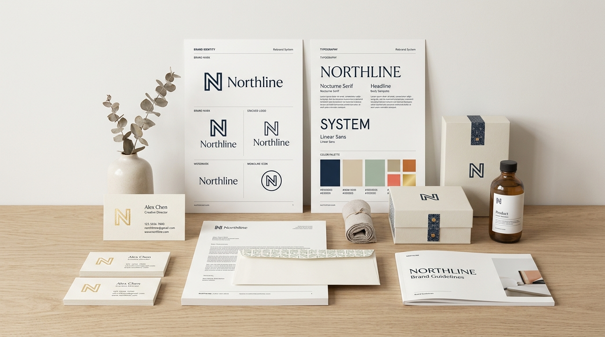
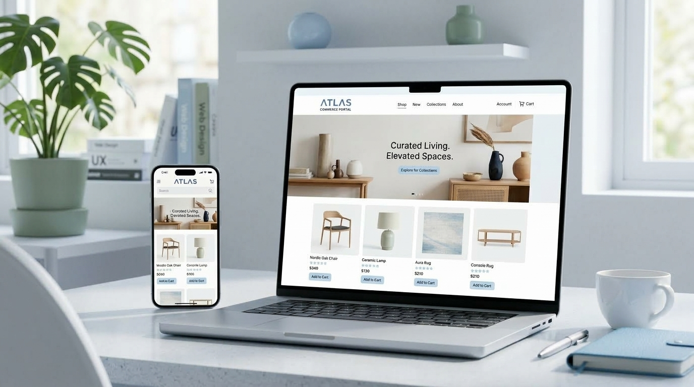

Identity Design
Digital Architecture & Creative Production
Digital systems for brands that need momentum.
We architect resilient web platforms, craft conversion-driven brand identities, and engineer kinetic short-form media to accelerate modern ventures.
Disciplines
Structured capabilities built for scale.
Engineering
Custom Web Development
Interface
UI/UX Interface Design
Intelligence
AI Agents & Automation
Motion Media
Short-Form & Video Editing
Growth Engines
Social Media & Digital Marketing
Workflow
How CraftLayer executes.
01
Context Blueprint
We establish scope parameters, target profiles, and architectural requirements before touching code or canvas.
02
Rapid Production
Modular sprints turn architectural blueprints into polished brand assets, responsive code, and kinetic media.
03
Deployment & Handoff
Production handoffs complete with thorough design tokens, semantic validation, and clear operating documentation.
Selected Work
Demonstration concepts that prove our craft.

BRAND KIT
Demo Concept
Northline Rebrand System
A structured vector design identity, dynamic color tokens, and launch assets built for modern ventures.

WEB PORTAL
Sample Project
Atlas Commerce Portal
A semantic, ultra-responsive storefront concept engineered for lead generation and zero runtime bloat.
LIVE MOTION REEL
Sample Project
Signal House Campaign Reel
Short-form kinetic video sequence featuring dynamic pacing, sound design, and color grading.
Ready to build?
Initiate your next project with CraftLayer.
Structured project scopes, predictable turnaround, and responsive engineering delivered with architectural precision.
Start Project Brief →